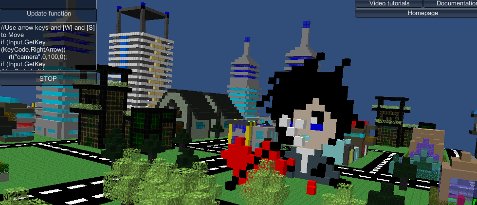

About 3dpl
3dpl is an educational real-time interpreted language based on Unity3d's JS. It is intended for new programmers to learn programming — specifically 3D game programming — while at the same time having fun! It includes many tutorials, which include: how to make a simple cube, how to color the cube, how to make 3D breakout (i.e. Arkanoid), how to make a 3D space first-person shooter, and how to make a 3D first person platforming game, and a Car Simulator and Helicopter Flight Simulator. Eventually it will be possible to upload programs to the cloud server and download those programs uploaded by other users, but this feature is still incomplete and disabled.
Videos of 3dpl (watch in full screen so you can read the code)
Loop Tutorials in MIT Scratch and 3dpl
Click here to open the Scratch project in Flash
The loops tutorial files are now included in the 3dpl distribution.
A word of advice to novice programmers
Many of us seasoned programmers started with BASIC and LOGO, simple programming languages where you could type a few commands and get results. They were fun. The debate today between programmers is "what programming language should I learn first?" The answer to this question is, of course, a matter of opinion. Answers range from C++ (a very difficult language) to Python (a rather easy language).
Of course, programming comes easier to some than others. Usually I would recommend starting with Python for a regular person of high intelligence. But I have come across some people that really can't seem to grasp the very basics of programming. for such people, I recommend the following: First learn Scratch, which is a programming language made by MIT. It is so simple that even kids can enjoy it, and has a (beta) flash version. Then learn my 3D programming language. It has more advanced concepts than Scratch and LOGO, such as C style loops, functions, and classes, but it is still simple to learn and fun. Then learn Python. it is a general purpose language that will allow you to do many tasks. I recommend the Pygame library once you have finished the Python tutorial, as this will allow you to make fun graphical games in Python. After this, you should be able to learn any other programming language out there.
If you find that any of these languages seem too easy for you, then skip to the next one, but do try starting with Scratch, then 3dpl, then Python, and then whatever language or languages you want.
Also it is very important that you study on your own. It is never enough to just study what your school tells you to! It is even good to study languages other than those your school teaches.
News
April 15, 2013 — 3dpl ge Beta 3.1 is out Features:- Added Audio/Music and Sound functions. See documentation for details on how to use it.
- Helicopter Flight Simulator 3 and Car Simulator 5 now have music and sound effects.
- Added many audio test programs, they demonstrate how sound should work.
- Added Functions to change the sky. See documentation for details on how to use it.
- Put an about button on main menu.
- Map editor. This allows you to make Map terrains using Objects made in the Object editor.
- There is a beautiful map of "Fox city".
- Made a car driving simulator program. It goes around Fox city.
- Made a helicopter flight simulator program. It goes around Fox city.
- There is a partially made example of how to make a game like Doom in 3dpl (DUNGEON 3).
- Map() function to render maps made in the map editor.
- A teleport option that also displays the current X Y and Z of the camera.
- You can now save Objects in obj format (it is faster than XML).
- Obj() function to render obj objects.
- Can now import and export to XML.
- Made a main menu that allows you to access the seperate parts of 3dpl ge.
- The program in now divided into 3 parts, Game Mode, for users that just want to play games (not available yet); Creative mode, for artists to make Objects and Maps; and Programming mode, for developers.
- sr() function, that sets the rotation of an object in degrees.
- Collider block collision detection, and 2 functions that handle that (see documentation for details).
- Now there are seperate folders for Programs, Objects, Textures and Maps.
- Much improvement in the usability of the Object Editor. too many features to go into detail. Just try it now!
- Important bug fix: fixed bug in Unique ID for the cubes that was causing some cubes to have the same unique IDs.
- Added feature: allowed for some specific optional collision detetion inside the Object Editor.
- Now you can move the cursor and the camera using the mouse!
- You can roll the camera
- You can stabilize the camera when it is facing in a weird angle
- Colors are now handled properly, you can turn off the guide
- New feature: Teleport to point of origin
- Object editor — you no longer need to write code to make objects that are composed of many blocks.
- Textures — you can now put pictures on your blocks. You can tile the same picture on every side of the cube or draw 6 pictures so that each side of the cube has a different image.
- Alpha channel support — you can now make your blocks transparent
- Corrected bug in collision detection
- Added support for alpha channel changes (transparent cubes)
- Added first loops video tutorial (more video tutorials to come!)
- Debug information
- Maximizing/Minimizing the code window
- Example 18 — A first person 3D platformer
- Proper Load and Save dialogs
- MessageBox
- InputBox
- Camera collision detection with cubes
Official IRC channel
The official 3dpl channel is #3dpl on irc.freenode.net. Click here to access from your web browser, or download an IRC client.
Linux Support
I have received reports from some Linux users that the text in the buttons and other controls does not appear. In response to the bug reports filed, Unity3D noted that their software only support Ubuntu 10.10 at this time. ArchLinux and other Linuxes are not officially supported.
The following list is not very complete, so all information on which Linuxes 3dpl works on and which ones it does not work on will be appreciated.
3dpl is known to work on:- Ubuntu 10.10 (officially supported by Unity3D)
- Linux Mint (unknown version)
- Mandriva 11.0
- ArchLinux (unknown version)
- Debian
The 3dpl team
- Usmar A Padow (main developer and project manager)
- Greg Cox (Contributed to program)
- Patrick Robotham (Contributed to program)
- Kindland (who though does not want recognition has been the artist)
- Daniel Foerster (Designed this web site)